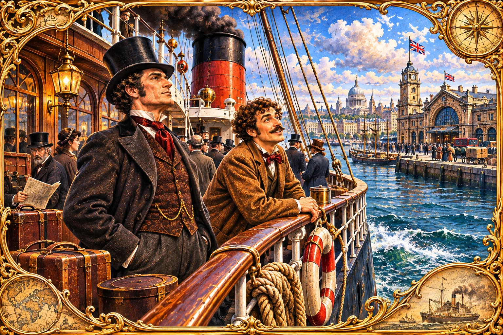

Victorian steamship harbor composition
Decorative, not a chapter 1/2 scene. The coastline, clock-tower and transit details are imaginative; the two characters do not match the verified source appearance for Fogg; do not associate this with any chapter anchor.
b96adc6036adc9e6f743…